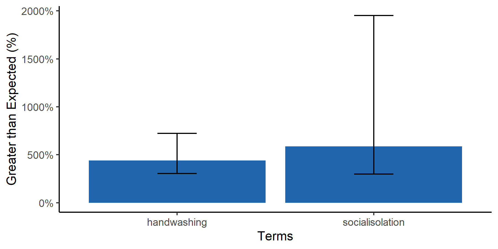

ARIMA Spike with One Geography but Multiple Terms
We may want to explore the difference between the ARIMA-forecasted and actual values for several terms. In that case, we start with multi_term_arima
multi_term_arima
multiterms <- multi_term_arima(
## A folder containing all of your gtrends data and ONLY your gtrends data
input_dir = "./input",
## Which data to use
geo = "US", # Geography you want to use
terms_to_use = NA, # Terms you'd like to analyze. If NA then all terms
timeframe_to_use = NA, # Only analyze data with filenames that contain a certain timeframe. If NA then all timeframes
## Parameters of time periods
beginperiod = T, # Beginning of the before period, if T then beginning of data
preperiod = 90, # If beginperiod is logical, preperiod is the number of days before interrupt to include in before period
endperiod = T, # End of the end period, if T then end of data
interrupt = "2020-03-01", # Date for interruption, splitting before and after periods
## Analytical arguments
bootstrap = T, # Bootstrap CIs
bootnum = 1000, # Number of bootstraps
kalman = T # If T, impute with Kalman
)
Using this data, we can create a barplot using multiterm_barplot
multiterm_barplot
panG <- multiterm_barplot(
df = multiterms %>% arrange(pctdiff),
## Graphing Parameters
title = NULL, # If NULL, no Title
xlab = "Terms", # x axis label
label_df = NA, # Use a two-column dataframe to label the barplot x axis
ylab = "Greater than Expected (%)", # y axis label
space = 0.8, # space between bars
## Set a colorscheme
colorscheme = "blue", # Color schemes set in this package "red", 'blue" or "jamaim"
# ... customize any color using these
hicol = NA, # Color of bars
## Saving arguments
save = T, # If T, save plot
outfn = './output/panG.png', # Location to save plot
width = 6, # Width in inches
height = 3 # Height in inches
)
